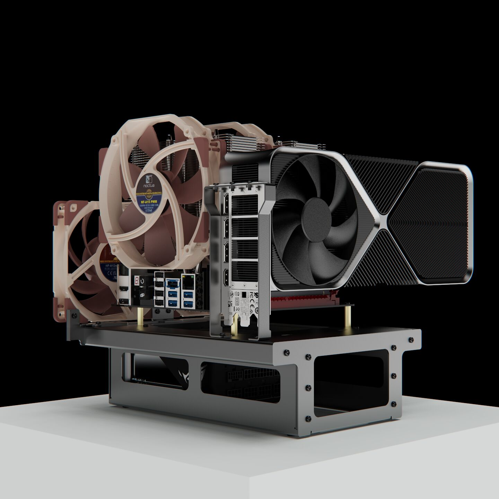
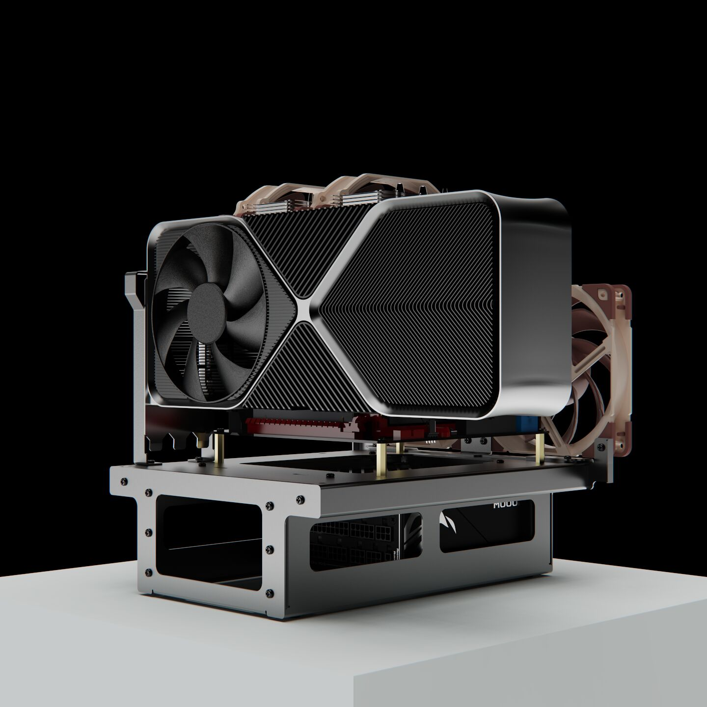
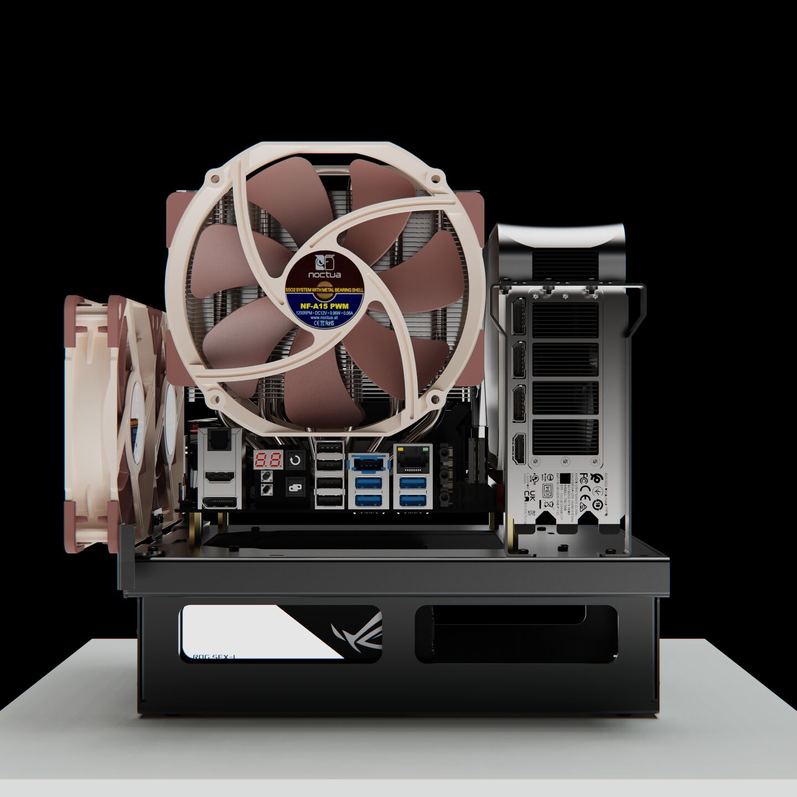

This is a ultraflow.
Introducing the u1n ultraflow the culmination of over 3 years of dedicated development to create a revolutionary, affordable, and highly adaptable test bench for creators, overclockers, and tech enthusiasts. Designed with meticulous attention to detail, our ultraflow redefines the conventional test bench experience, empowering users to unlock the full potential of their hardware.

We understand the importance of accessibility for all enthusiasts. Our ultraflow is designed to be accessible to a wide range of users without compromising on essential features. Through the utilization of optimized manufacturing methods that necessitate no investment in tooling, enabling on-demand processing, and leveraging cost-effective materials we've achieved an unprecedented level of affordability without sacrificing quality.
Unrivaled Affordability
We understand the importance of accessibility for all enthusiasts. Our ultraflow is designed to be accessible to a wide range of users without compromising on essential features. Through the utilization of optimized manufacturing methods that necessitate no investment in tooling, enabling on-demand processing, and leveraging cost-effective materials we've achieved an unprecedented level of affordability without sacrificing quality.
Mod-Ready Platform
Embrace your creativity and tailor your setup to your heart's desire. Our ultraflow features a modular design that allows you to effortlessly customize and expand your configuration. With strategically placed mounting points and attachment options, you can easily add storage solutions and radiator or additional fan mounts to keep your system running efficiently.


Crafted from robust, powder-coated steel, our ultraflow is engineered for durability and sturdiness. It can withstand the rigors of extensive use and transportation, ensuring it remains a reliable partner throughout your overclocking and testing endeavors.
Built to Last
Crafted from robust, powder-coated steel, our ultraflow is engineered for durability and sturdiness. It can withstand the rigors of extensive use and transportation, ensuring it remains a reliable partner throughout your overclocking and testing endeavors.
Effortless Assembly
Our ultraflow designed for hassle-free assembly. With a user-friendly setup, you can easily slot the components together and secure them in place using standard screws and a standard screwdriver. To streamline the building process, we've incorporated industry-standard self-clinch nuts into the design. These nuts ensure that your components stay securely in place while allowing for easy adjustments or upgrades without requiring additional tools.

We care about the environment as much as we care about your experience. Our ultraflow's innovative flat-packable design not only offers unmatched convenience for transportation and storage but also reduces the carbon footprint during shipping. By efficiently packing multiple units in a single shipment, we aim to minimize waste and contribute to a cleaner planet.
Flat-Pack Convenience
We care about the environment as much as we care about your experience. Our ultraflow's innovative flat-packable design not only offers unmatched convenience for transportation and storage but also reduces the carbon footprint during shipping. By efficiently packing multiple units in a single shipment, we aim to minimize waste and contribute to a cleaner planet.